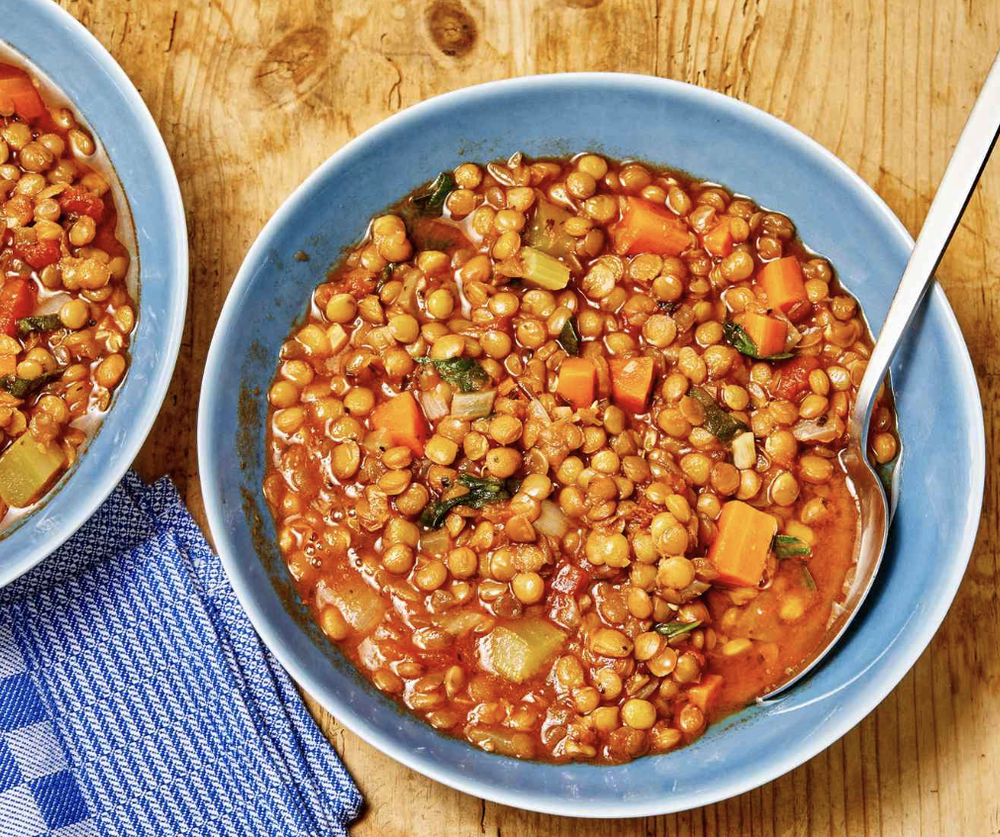

Lentil Soup
Found on the internet (I forgot where) and adapted

Description:
Low calorie and warm, good for winter, gets bland fast
Ingredients:
- 1 yellow onion, diced
- 3 big carrots, diced
- 3 celery stalks, diced
- 1 1/2 cups of regular green lentils
- 1 tbsp. smoked paprika
- 3-4 cloves of garlic
- Salt and pepper, to taste
- 2 15-oz. cans of fire roasted tomatoes
- 3 veggie boullion cubes
- 4 cups of water
- Fresh parsely and parmesan, as toppings
Directions:
- Turn on the instant pot to saute. Add the onions, simmering until soft and beginning to brown.
- Add carrots and celery, simmering for about 2 minutes.
- Add lentils, spices and garlic, cooking for 30 seconds.
- Add the water, boullion cubes and tomatoes. Turn the instant pot on to pressure cook for 15 minutes (on high).
- Let the instant pot naturally release for 15 minutes, then manually release if necessary.
- Top with parm and chopped parsely.